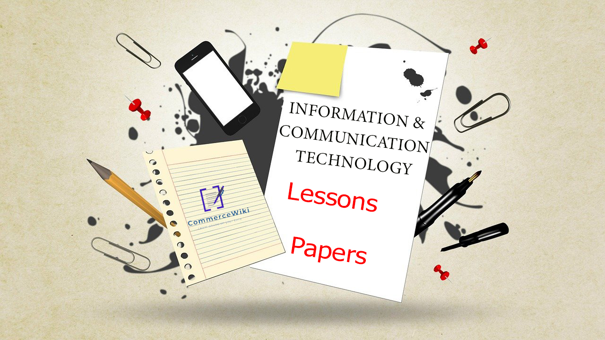

Home
About
Services
Contact Us

Term Test Papers | වාර විභාග ප්රශ්න පත්ර
Target Papers | ආදර්ශ ප්රශ්න පත්ර
Past Papers | පසුගිය විභාග ප්රශ්න පත්ර
Online MCQ Papers | මාර්ගගත බහුවරණ ප්රශ්න පත්ර
01 - තොරතුරු හා සන්නිවේදන තාක්ෂණයේ මූලික සංකල්ප
Other Materials
Click Here
02 - පරිගණක උපකරණවල පරිණාමය
Other Materials
Click Here
03 - පරිගණකයෙහි දත්ත හා උපදෙස් නිරූපණය
Other Materials
Click Here
04 - මූලික අංකිත පරිපථ සහ උපාංග
Other Materials
Click Here
👉Next Page(5th Lesson-8th Lesson